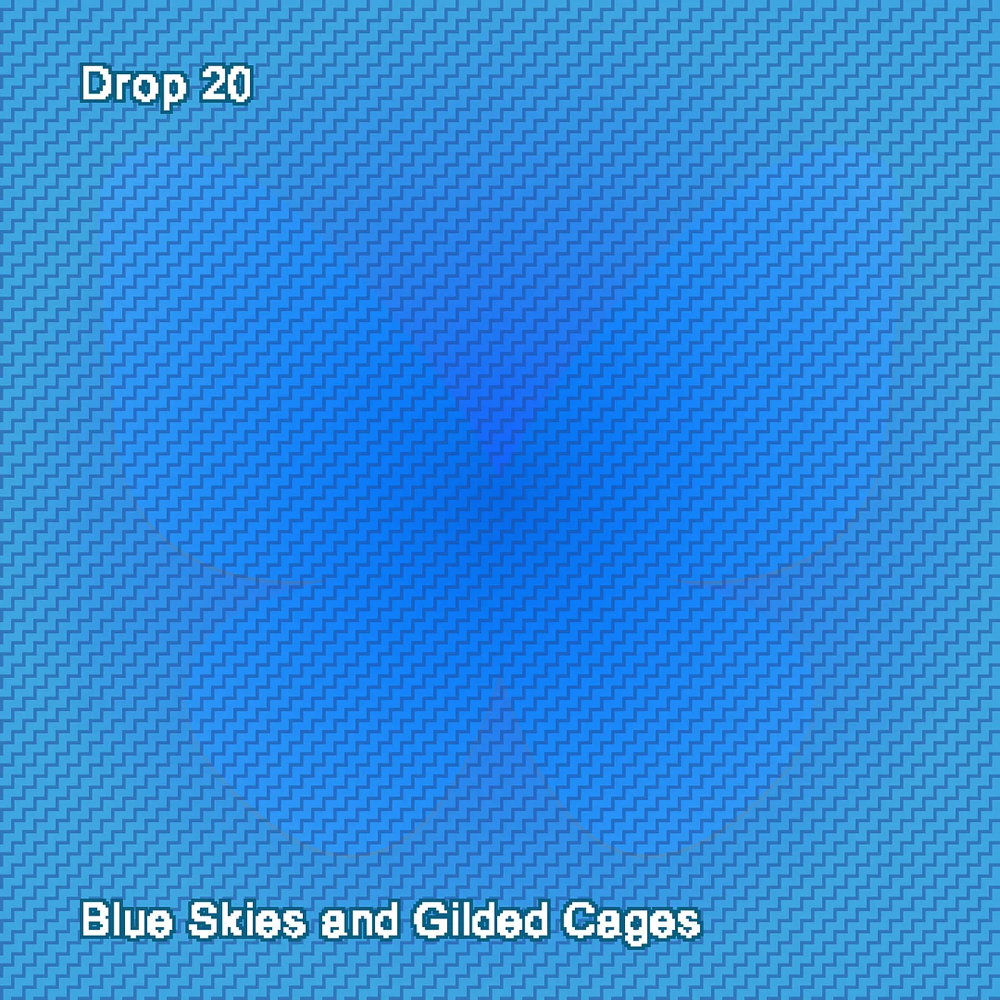
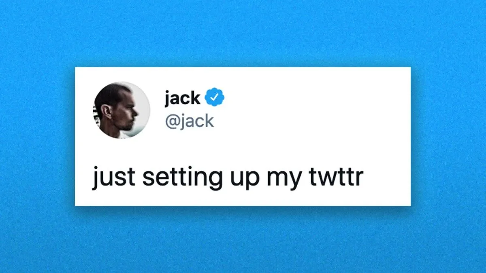
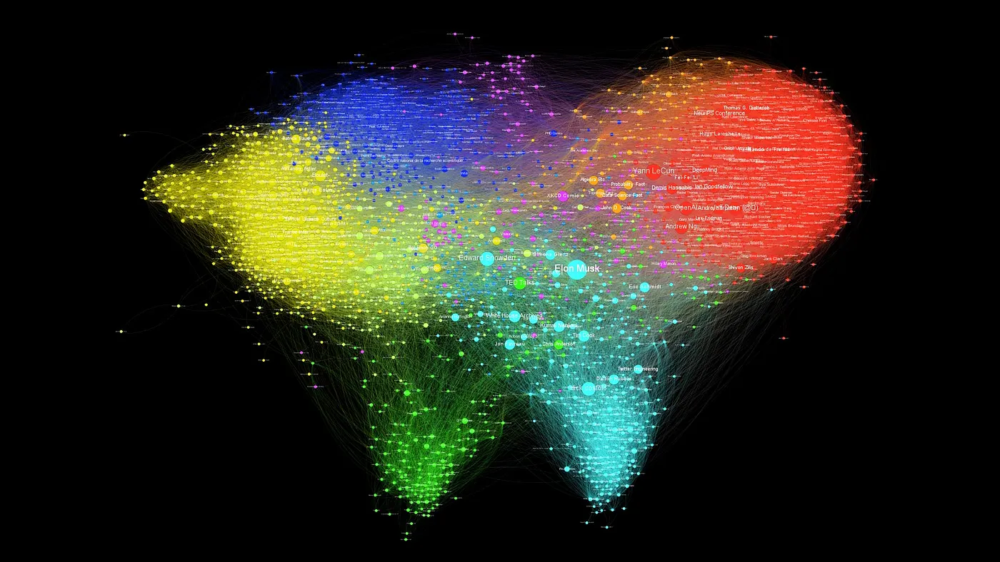
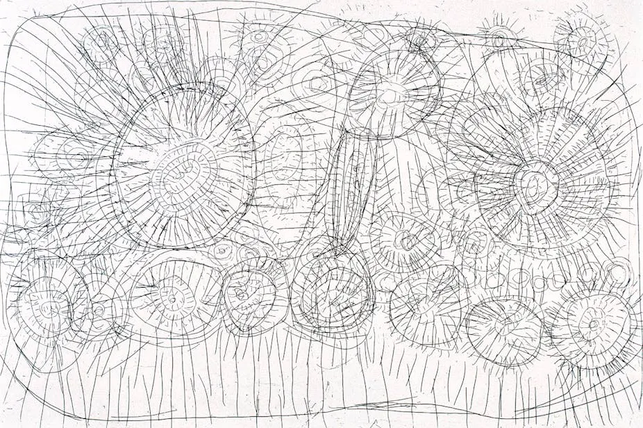
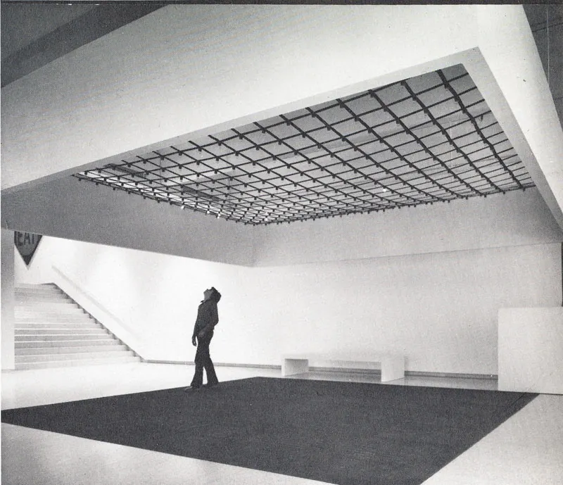

Drop #20 · November 25, 2024 · 13 min read
On X-odus, digital spaces and collective desire
Hey everyone (▰˘◡˘▰)
Welcome back to Drops, REINCANTAMENTO’s newsletter. Today we look at the X-odus phenomenon - the mass migration from Twitter/X and what it might tell us about digital spaces and collective desire. Inspired by recent debates in the Italian infosphere, this piece is available in both Italian and English.
A reminder: REINCANTAMENTO is sustained by voluntary work. If you like what we do, consider donating or subscribing to support what we do!

Lo stanno chiamando l'X-odus. L'esodo da X era già in incubazione da fine 2022 ma è in queste settimane di Novembre che masse di utenti stanno decidendo consapevolmente di abbandonare il fu uccellino blu. La goccia che ha fatto traboccare il vaso, se così possiamo chiamarla, è la nuova ascesa di Donald Trump, grandemente facilitata da quella cassa di risonanza dell'estrema destra che una volta chiamavano Twitter. Il responsabile, di cui purtroppo dobbiamo vedere la faccia ormai ogni giorno, è Elon Musk, divenuto proprietario della piattaforma nel novembre 2022, con l'intenzione di monopolizzare un angolo del dibattito pubblico. Ci è, almeno in parte, riuscito. Vedremo quanto durerà.
Musk è intanto riuscito anche ad allontanare milioni di persone, inclusi accademici, giornalisti, redazioni intere - come il Guardian o l'italiana Valigia Blu - dal suo piccolo regno. O meglio: sono questi milioni di utenti che hanno attivamente deciso di andarsene, stanchi delle nuove policy inutili, dei profili fascisti boostati e in genere di essere alla mercé di un idiota. In moltissimi - 15 milioni questo mese - hanno scelto come loro meta alternativa Bluesky, sorta di erede spirituale di Twitter stesso, sviluppato come scialluppa di salvataggio dal ex-CEO Jack Dorsey nel 2019. Altri cloni di X sono in crescita come Threads, ennesima scopiazzata di casa Meta, il più crypto-oriented Nostr (ma si potrebbe parlare anche di Farcaster o Lens Protocol), e la galassia federata di Mastodon, che già lo scorso anno aveva vissuto un momento di hype poi presto scemato.
Il termine X-odus mi ha ricordato di un testo che avevo scritto nel 2021 dove prefiguravo, con un certo entusiasmo naive, una politica dell'esodo come liberazione dal dominio del capitalismo delle piattaforme. Oggi, tre anni dopo, sono stato stimolato dagli interventi di alcune delle voci più interessanti del panorama italiano come Tiziano Bonini, Enrico Gullo o Flavio Pintarelli, nel mettere insieme alcune considerazioni sul tema. Inoltre, negli ultimi mesi ho passato tanto tempo immerso nei temi dell’abitare digitale e degli spazi autonomi online lavorando ad nCHANT, la rivista monografica di REINCANTAMENTO. Il numero 0 arriverà a Gennaio e sarà dedicato al concetto di giardino digitale. Ne riparleremo presto.

Linee di fuga
Partiamo da un'osservazione ottimistica. L'abbandono intenzionale di X è un fatto politico interessante: un disinvestimento del desiderio collettivo verso un sistema tecno-sociale marcio. Si tratta di un punto a me particolarmente caro che si interseca con i discorsi filosofici sul reincantamento. Il reincantamento è una pratica di costruzione e attribuzione di significato che assegna ai luoghi, siano essi fisici o digitali, un'aura specifica, una particolare capacità di evocare emozioni e generare appartenenza.
Per esempio, Twitter, per un certo periodo, era considerato lo spazio online ideale per il giornalismo di qualità e la circolazione della ricerca accademica. Questa percezione non è nata solo dalle caratteristiche tecniche della piattaforma, ma da un investimento di desiderio collettivo che ha prodotto quella che potremmo chiamare una "finzione operativa": l'idea di Twitter come spazio progressista e intellettuale. Non uso il termine finzione in senso dispregiativo: creiamo costantemente narrazioni condivise dei luoghi che abitiamo, racconti che ci aiutano a definirli e a sentirli nostri.
La stessa dinamica di finzione collettiva è visibile nella parabola di Instagram. Nato come social per la condivisione di foto amatoriali e momenti quotidiani, è stato gradualmente trasformato in una vetrina competitiva per il lavoro creativo. Meta ha spinto Instagram come suo social di punta e gli utenti, piano piano, vi si sono adattati, finendo per utilizzarlo, in parte impropriamente, come strumento principale della loro auto-promozione. Negli ultimi anni poi, è diventato addirittura il veicolo prinicpale dell’attivismo online. In questo caso però, ciò che appare come una riappropriazione creativa dello spazio da parte degli utenti è in realtà un processo di cattura: Meta non solo permette ma incoraggia questi usi imprevisti, trasformando le nostre finzioni collettive in dati comportamentali e relazioni monetizzabili. Il mito dell'agency nasconde una verità più amara: le piattaforme sono trappole specializzate per specifiche comunità, capaci di cristallizzare le nostre narrazioni condivise in social graph sfruttabili. Così, come ci ricorda Bonini, ogni network finisce per essere legato a una piattaforma: su Facebook troveremo i nostri parenti e l’editoria italiana, su Twitter la scena accademica internazionale, su Instagram i promoter techno, e così via.

Nel caso dell'esodo da X, assistiamo a un processo inverso rispetto alla costruzione di significato che abbiamo visto finora: l'avversione collettiva verso Musk ha innescato una catena di disinvestimento emotivo dalla piattaforma, spingendo il desiderio degli utenti verso nuovi territori. È significativo che Bluesky si presenti come un simulacro nostalgico della "golden age" di Twitter: uno spazio che si autorappresenta come progressista, amichevole, intellettuale, aperto al dialogo. Ma questa è ancora una volta una finzione collettiva, questa volta costruita sul calco di un'esperienza passata che si cerca disperatamente di replicare. Jay Springett lo ha descritto così: "Vorrei potervi dire che Bluesky è un'utopia di arcobaleni digitali, un giardino fiorente di nuove connessioni e idee. Ma onestamente, dopo questa settimana, ho capito una cosa: è un po'... triste. Non in modo tragico, ma in modo malinconico e silenzioso, come quando si entra in un vecchio pub dove tutti cercano di riaccendere un'atmosfera già bruciata."
Abitare la contraddizione
Ci troviamo quindi davanti ad un nodo duplice. Da un lato, sta emergendo nella coscienza collettiva una nuova consapevolezza del significato politico dell'abitare digitale. Il rifiuto dell'universo Musk ha spinto milioni di persone a mettere in discussione, forse per la prima volta, il loro rapporto con gli spazi online. Se in passato abbiamo assistito a migrazioni di utenti tra piattaforme, mai queste erano state motivate da una così chiara presa di posizione politica. Questo rappresenta ai miei occhi un innegabile passo avanti, un parziale risveglio collettivo che aspettavamo da anni. Né lo scandalo di Cambridge Analytica, né la censura politica di Meta su Gaza avevano generato una simile reazione. Finalmente, discorsi che erano confinati a piccole cerchie carbonare nell'ultimo decennio stanno raggiungendo il mainstream. Sminuire il valore di questa svolta mi sembra controproducente.
Dall'altro lato, emerge subito il limite di questa presa di coscienza: si traduce in una semplice scelta di "consumo etico". Non si rifiuta il modello platform-based, ma si sceglie semplicemente una sua versione più presentabile: non più il Twitter fascista ma la sua reincarnazione azzurra e borghese-illuminata. Su questo punto si concentrano, giustamente, le critiche più acute da sinistra.
Eppure, per quanto insufficiente, questo fenomeno può rappresentare un punto di partenza. Il desiderio collettivo in fuga da X può trovare espressioni inedite e rivitalizzare forme di presenza digitale già esistenti ma dimenticate. "Abbiate un po' di ambizione!" - ci rimprovera Jay Springett. Invece di osservare passivamente dalla riva, lamentando come questo esodo non equivalga alla fine del capitalismo digitale, dovremmo cogliere l'energia di questa corrente.
Potremmo, ad esempio, riscoprire i blog come suggerisce Pintarelli, evitando di incanalare i rinnovati desideri di autonomia verso l'ennesima piattaforma proprietaria come Substack (ce ne andremo presto da qui, promesso). Dovremmo interpretare l'esodo come una "ritirata impegnata": non una fuga dal digitale ma una migrazione strategica che prepari il terreno per nuove forme di presenza online. Che questo primo rifiuto ne inneschi altri, in una cascata di liberazioni progressive. E che da questi rifiuti partano progettualità costruttive e creazione di nodi di contro-potere.
L'obiettivo è ritrovarsi sempre più spesso offline, usando il digitale per potenziare, non sostituire, la nostra presenza fisica. Come i guerrilla gardeners che trasformano spazi urbani abbandonati in giardini comuni, potremmo occupare e rigenerare gli interstizi del web corporate. Hosting autogestiti, server indipendenti, reti decentralizzate: sono queste le infrastrutture autonome necessarie per sostenere nuove forme di abitare digitale. Il lavoro da fare è molto se si vogliono rivedere le stelle.

English Version
They're calling it the X-odus. The exodus from X has been incubating since late 2022, but in these November weeks, masses of users are consciously deciding to abandon what was once the bluebird social media. The final straw, if we can call it that, is Donald Trump's new rise, greatly facilitated by that far-right echo chamber once known as Twitter. The culprit, whose face we unfortunately have to see every day now, is Elon Musk, who became the platform's owner in November 2022, intending to monopolize a corner of public discourse. He has, at least partially, succeeded. We'll see how long it lasts.
Meanwhile, Musk has managed to drive away millions of people, including academics, journalists, and entire newsrooms - like The Guardian or the Italian Valigia Blu - from his little kingdom. Or rather: these millions of users have actively chosen to leave, tired of pointless new policies, boosted fascist profiles, and generally being at the mercy of an idiot. Many - 15 million this month - have chosen Bluesky as their alternative destination, a sort of spiritual heir to Twitter itself, developed as a lifeboat by former CEO Jack Dorsey in 2019. Other X clones are growing, like Threads, Meta's latest copycat, the more crypto-oriented Nostr (though we could also mention Farcaster or Lens Protocol), and Mastodon's federated galaxy, which experienced a moment of hype last year that quickly faded.
The term X-odus reminded me of a text I wrote in 2021 where I envisioned, with a certain naive enthusiasm, a politics of exodus as liberation from platform capitalism's dominion. Today, three years later, I've been stimulated by interventions from some of the most interesting voices in the Italian landscape, like Tiziano Bonini, Enrico Gullo, or Flavio Pintarelli, to put together some reflections on the topic. Moreover, in recent months I've been deeply immersed in themes of digital dwelling and autonomous online spaces while working on nCHANT, REINCANTAMENTO's monographic magazine. Issue 0 arrives in January and will be dedicated to the concept of digital gardens. More on that soon.
Lines of Flight
Let's start with an optimistic observation. The intentional desertion from X is an interesting political event: a collective disinvestment of desire from a rotten techno-social system. This point is particularly dear to me and intersects with philosophical discourses on re-enchantment. Re-enchantment is a meaning-making practice that assigns to places, whether physical or digital, a specific aura, a particular capacity to evoke emotions and generate belonging.
For instance, Twitter was, for a certain period, considered the ideal online space for quality journalism and academic research circulation. This perception wasn't born solely from the platform's technical characteristics but from an investment of collective desire that produced what we might call an "operative fiction": the idea of Twitter as a progressive, intellectual, and liberal space. I don't use the term fiction pejoratively: we constantly create shared narratives of the places we inhabit, stories that help us define them and make them our own.
The same dynamic of collective fiction is visible in Instagram's trajectory. Born as a social network for sharing amateur photos and everyday moments, it has gradually been transformed into a competitive showcase for creative work. Meta pushed Instagram as its flagship social platform, and users, slowly but surely, adapted, ending up using it, somewhat improperly, as the main tool for their self-promotion. In recent years, it has even become the primary vehicle for online activism. However, in this case, what appears as a creative reappropriation of space by users is actually a process of capture: Meta not only allows but encourages these unforeseen uses, transforming our collective fiction into behavioral data and monetizable relationships. The myth of agency hides a bitter truth: platforms are specialized traps for specific communities, capable of crystallizing our shared narratives into exploitable social graphs. Thus, as Bonini reminds us, each network ends up being platform-specific: on Facebook, we'll find our relatives and Italian publishing, on Twitter the international academic scene, on Instagram the techno promoters, and so on.
In the case of the exodus from X, we're witnessing an inverse process to the meaning-making we've seen so far: collective aversion toward Musk has triggered a chain of emotional disinvestment from the platform, pushing users' desire toward new territories. Significantly, Bluesky presents itself as a nostalgic simulacrum of Twitter's "golden age": a space that self-represents as progressive, friendly, intellectual, and open to dialogue. But this is once again a collective fiction, this time built on the mold of an experience that people are desperately trying to replicate. In Jay Springett’s description: "I wish I could tell you that Bluesky is a utopia of digital rainbows, a thriving garden of new connections and ideas. But honestly, after a this week, I’ve realised something—it’s kind of… sad. Not sad in a tragic way, but in a melancholic, quiet sort of way, like wandering into an old pub where everyone is trying to rekindle a vibe that’s already burned out.”
Inhabiting the Contradiction
We find ourselves facing a dual knot. On one side, a new awareness of the political significance of digital dwelling is emerging in the collective consciousness. The rejection of Musk's universe has pushed millions of people to question, perhaps for the first time, their relationship with online spaces. While we've witnessed user migrations between platforms before, never have they been motivated by such a clear political stance. In my eyes, this represents an undeniable step forward, a partial collective awakening we've been waiting for years. Neither the Cambridge Analytica scandal nor Meta's political censorship on Gaza had generated such a reaction. Finally, discourses that were confined to small radical circles over the last decade are reaching the mainstream. Diminishing the value of this shift seems counterproductive.
On the other side, the limit of this awakening immediately emerges: it translates into a simple choice of "ethical consumption." The platform-based model isn't being rejected; instead, people are simply choosing a more presentable version of it: no longer fascist Twitter but its azure, bourgeois-enlightened reincarnation. Here lie the most acute critiques from the left, and justifiably so.
And yet, however insufficient, this phenomenon might represent a starting point. The collective desire fleeing X might find unprecedented expressions and revitalize existing but forgotten forms of digital presence. "Have some ambition!" - Jay Springett reproaches us. Instead of passively observing from the shore, lamenting how this exodus doesn't equate to the end of digital capitalism, we should harness the energy of this current.
We could, for example, rediscover blogs as Pintarelli suggests, avoiding channeling renewed desires for autonomy toward yet another proprietary platform like Substack (we'll leave here soon, promised). We should interpret the exodus as an "engaged retreat": not a flight from the digital but a strategic migration that prepares the ground for new forms of online presence. May this first rejection trigger others, in a cascade of progressive liberations. And that these acts of refusal might spark constructive endeavors and the creation of nodes of counter-power. The goal is to meet offline more frequently, using digital tools to enhance, not replace, our physical presence. Like guerrilla gardeners transforming abandoned urban spaces into communal gardens, we could occupy and regenerate the interstices of the corporate web. Self-hosted services, autonomous servers, and decentralized networks: these are the autonomous infrastructures necessary to support new forms of digital dwelling. There's much work to be done if we want to see the stars again.
